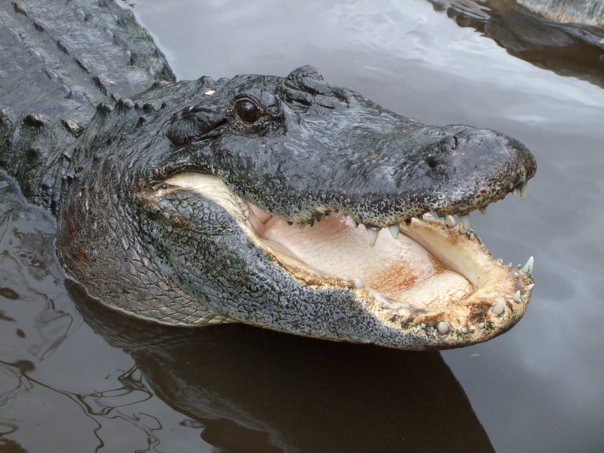
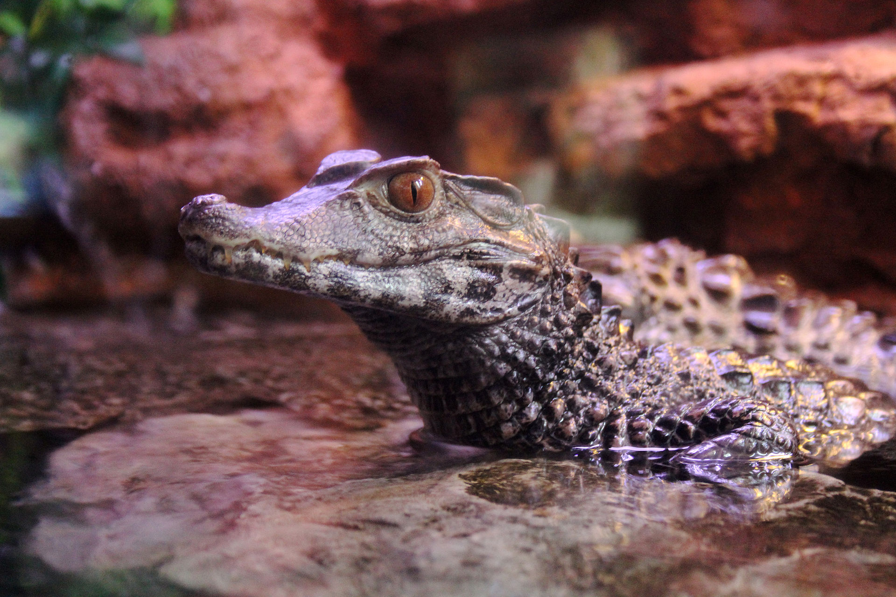

Espécie amplamente distribuída pelo sudeste dos Estados Unidos. Machos medem no máximo 4,5 m de comprimento e as fêmeas medem até 3 m. Habita pântanos, lagos e banhados, ocorrendo em menor densidade ao longo de rios. São capazes de sobreviver a temperaturas abaixo de zero.
Jacaré Americano

Espécie de pequeno porte medindo até 2 m de comprimento. Historicamente,era amplamente distribuído pela bacia do rio Yangtzé, no sudeste da China. Atualmente, ocorre em uma região restrita na província de Anhui sendo um dos crocodilianos mais ameaçados atualmente. Habita regiões de clima temperado e hiberna para sobreviver a invernos rigorosos.
Jacaré da China

A jacaretinga apresenta a mais ampla distribuição geográfica entre os crocodilianos do Novo Mundo, ocorrendo desde o sul do México até o norte do Brasil e do Peru. É uma espécie de porte médio, com machos podendo medir até 2,7 m de comprimento. Muito adaptável, habita qualquer tipo de ambiente associado à água.
Jacaretinga

Espécie de pequeno porte que ocorre nas bacias dos rios Amazonas e Orinoco no norte e entre as bacias dos rios Paraguai e Paraná e do São Francisco. É considerado o menor crocodiliano, dificilmente ultrapassando 1,6 m de comprimento, apesar de registros de até 2 m de comprimento.